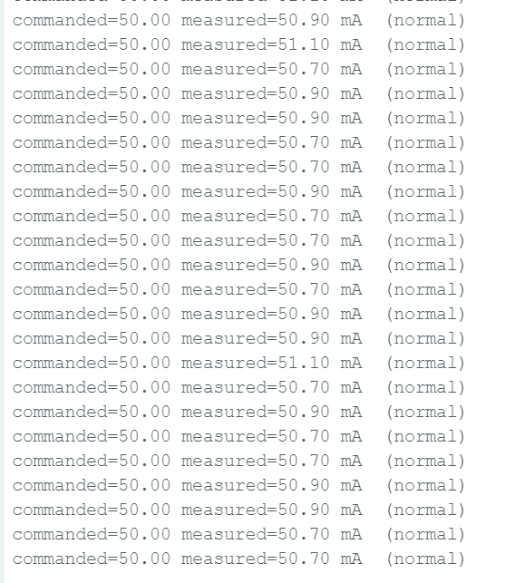
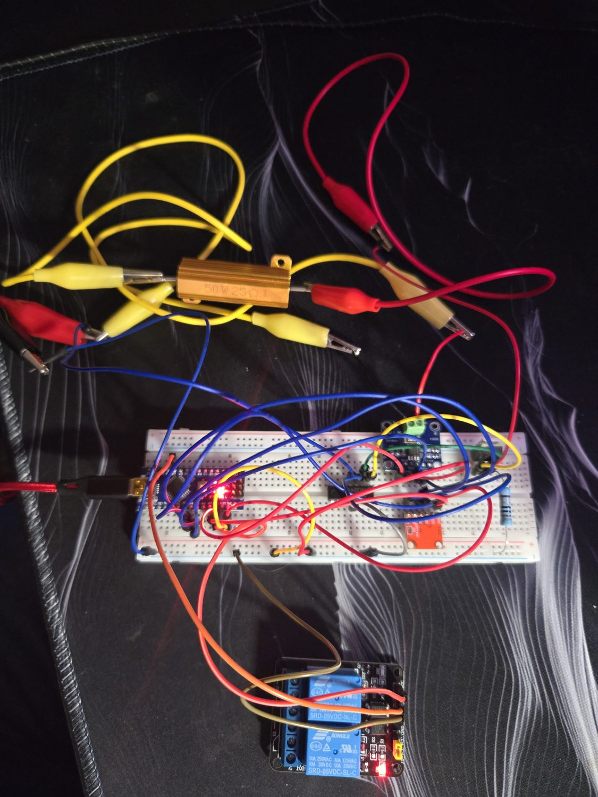

Secondary Current Injection Test Set
A programmable, closed-loop current source built to commission a protective relay — it commands a precise current, measures the delivered current independently, and injects it into the relay to verify it trips at the right threshold. The hardware equivalent of a relay commissioning tool, built from the analog fundamentals up.
Secondary current injection is how protective relays are tested and commissioned in the field: a known current is forced into the relay to confirm its settings and trip behavior. Commercial test sets cost thousands. This project builds a working one from first principles — a feedback-regulated current source, commanded digitally — and then uses it to validate a real relay.
It demonstrates two things at once: analog circuit design (a current source is not the same as a voltage source), and an understanding of how relays are actually commissioned.
- Command. A microcontroller sets a target current by outputting a reference voltage through an MCP4725 DAC.
- Regulate. An LM324 op-amp compares that reference to the voltage across a sense resistor and drives an IRLZ44N MOSFET until the two match — forcing the current to
V_command / R_sense. This feedback loop is what makes it a current source: it holds the current constant even as supply voltage or load changes. - Measure. An INA219 sensor independently measures the actual delivered current, so commanded and measured can be compared — closed-loop verification.
- Inject & trip. The regulated current is injected into the protective relay, whose firmware runs an IEC 60255 inverse-time characteristic. Above pickup, the relay trips — validating it against a known, measured current.
The heart of the design is a voltage-controlled current source: the op-amp continuously drives the MOSFET to hold the sense-resistor voltage equal to the commanded voltage, which pins the current regardless of what the load does.
Commanding a current, measuring it back, and driving the relay to trip — the full commissioning cycle running live.
With the INA219 measuring independently of the command, the loop's accuracy is directly checkable — commanded 50 mA holds at roughly 50.7–51.1 mA across a continuous stream of readings.

| Test | Result |
|---|---|
| Commanded vs. measured | 50 mA commanded → ~50.6 mA measured (~1%) |
| Supply independence | Current held constant as supply varied 12 V → 15 V |
| Relay commissioning | Injected current above pickup tripped the relay, faster at higher current |
Holding the current constant while the supply voltage changes is the definitive test of a current source — a voltage source would let the current drift with the load. That's the behavior that confirms the feedback loop is doing its job.
Setting the current is a two-step conversion: target current becomes a sense-resistor voltage (Ohm's law), which becomes a 12-bit DAC value. The op-amp does the rest.
void setCurrent_mA(float target_mA) {
float command_voltage = (target_mA / 1000.0) * R_SENSE; // V = I x R across the sense resistor
int dac_value = (int)((command_voltage / VCC) * 4095); // scale to the 12-bit DAC (0-4095)
dac.setVoltage(dac_value, false); // op-amp then forces the current to match
}
- Gate drive matters. A "logic-level" MOSFET still needs adequate gate voltage — the op-amp had to run from a higher supply (~12 V) than the logic rail to drive the gate fully on.
- Op-amps have a floor. The LM324 can't regulate a signal too close to ground, so the sense resistor had to be sized so the feedback voltage sits comfortably inside the op-amp's usable range. A smaller resistor produced a near-ground signal it couldn't control.
- Shared reference. The current source and the measurement/logic need a common ground, or the op-amp is comparing voltages against different references and the loop never settles.
This test set exists to commission the hardware IDMT relay — one instrument built to verify another. Together they show the full engineering cycle: design a protective relay, then build the test equipment that proves it works, exactly the way relays are commissioned in the field.
Firmware, the circuit photo, the commanded-vs-measured capture, and the trip demonstration video.